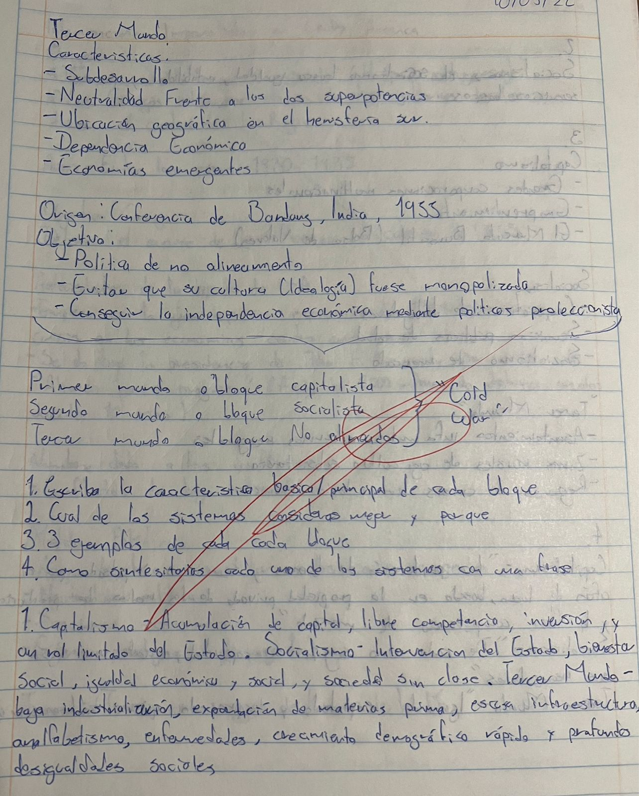
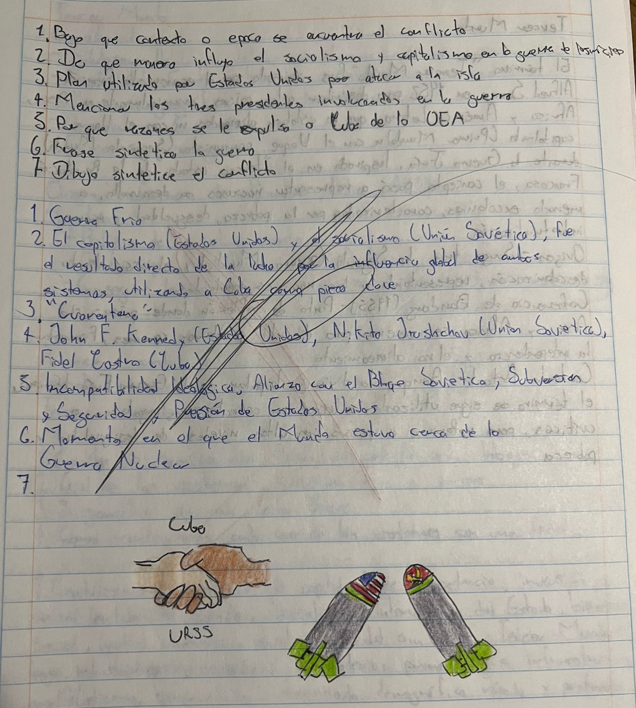
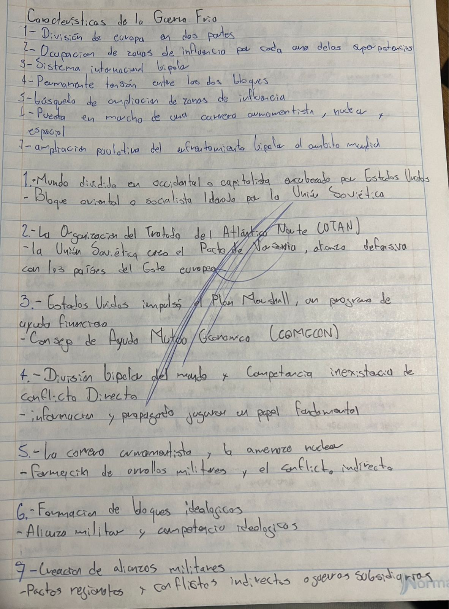
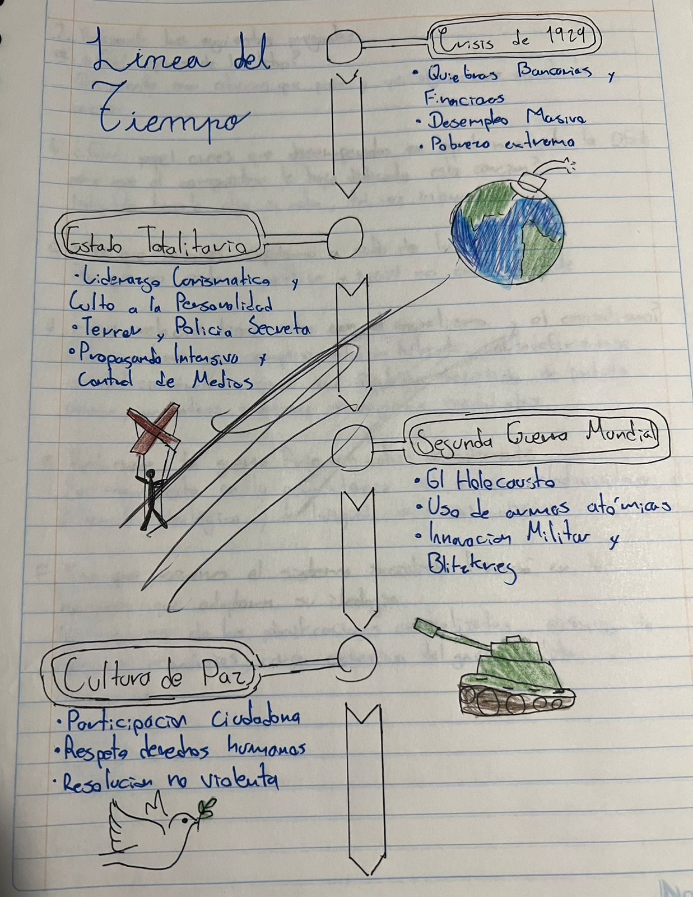
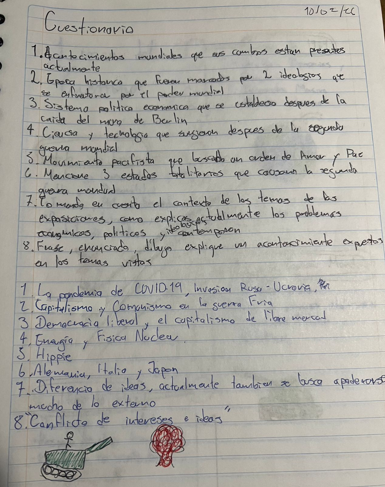

Tema: La evolución del presidencialismo en México dentro del mundo belico
Materia impartida por el Maestro Martin Manriquez
- Tratado de versalles
- Crisis económico de 1929
- Surgimiento de los Estados totalitarios: Fascismo, Nazismo, Militarismo, Japones, Franquismo
- La Segunda Guerra Mundial
- Guerra Fria
- Estado de Bienestar
- La Guerra de Corea
- La Crisis de los Misiles en Cuba
- Tercer Mundo
- Apertura Economica y Neoliberalismo




